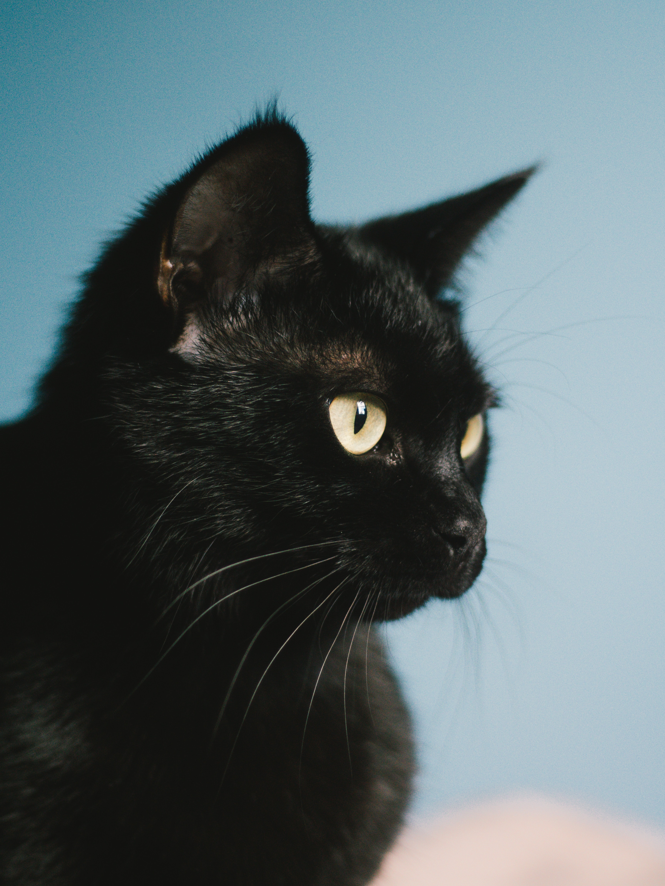
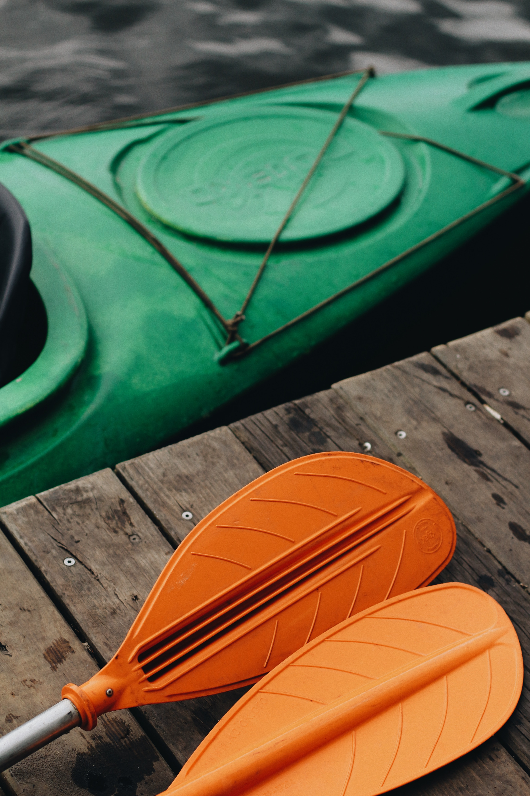

Hello! I'm Andres Macias
I am currently attending a full-stack web developer program offered by Bellevue University. I enjoy designing websites using Adobe XD and then building them using VSCode. When I am not building websites I am playing music on my keyboard to my cat daisy or when I feel adventurous I go out kayaking in the surrounding lakes. For a glimpse of what I have been working on check out my projects page for a portfolio of web development projects. Check out my Bucket list page for places I would like to visit!